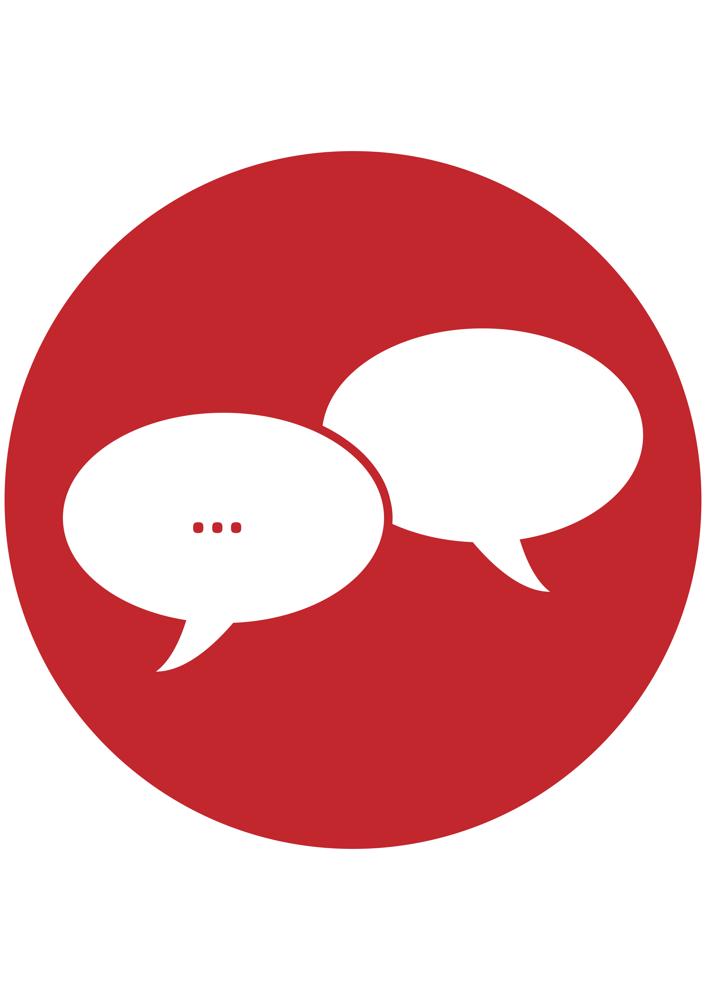
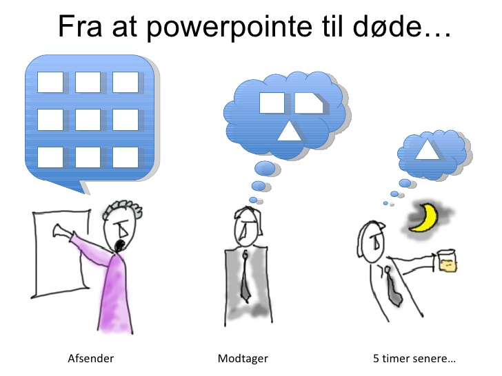

Kommunikation
Kommunikation har mange former og udtryk, og derfor kan måden hvorpå vi kommunikerer variere. Kommunikation kan inddeles i følgende kategorier; verbal, nonverbal, skriftlig og visuel kommunikation. Flere kategorier kan sagtens anvendes på samme tid og det giver mulighed for at opnå bedre resultater.
Verbal kommunikation
Verbal kommunikation henviser til brugen af sprog og lyde, og dækker derfor over det talte sprog. Verbal kommunikation anvendes ofte i samspil med nonverbal kommunikation, lytning og reflektering for at opnå bedst muligt grundlag for udveksling af meddelelse, samt forståelse heraf.
Nonverbal kommunikation
Kommunikation omhandler ikke blot den åbenlyse betydning af ord og meddelelser, men også implicitte meddelelser, der kommer til udtryk gennem nonverbal kommunikation. Nonverbal kommunikation refererer til den del af kommunikationen, der foregår uden brug af ord, men derimod ved brug af kropssprog, mimik og toneleje. Disse signaler kan give yderligere information og betydning til det sagte (verbal kommunikation).
Skriftlig kommunikation
Skriftlig kommunikation må betragtes som envejs kommunikation, da modtageren, som udgangspunkt, ikke har mulighed for at give respons og stille spørgsmål til det skrevne. Dette kan medføre store konsekvenser, såfremt modtageren af den skriftlige kommunikation misforstår og mistolker budskabet. Netop derfor er det vigtigt, som afsender af den skriftlige kommunikation, at lægge vægt på nedenstående, så modtageren får den bedst mulige chance for at afkode budskabet korrekt.

Kvantitativ metode
Kvantitativ metode er, når man kan måle resultatet. Det kan man fx, når man skal lave undersøgelser med spørgeskemaer. Når man bruger spørgeskemaer, skal man være ret sikker på, at resultatet er repræsentativt, det vil sige, det gælder for den gruppe, man undersøger. Derfor bruger man spørgeskemaer, når man skal have svar fra mange mennesker.
- Fordelene ved spørgeskemaer er, at man kan få ens svar på mange spørgsmål fra mange mennesker, og man kan måle de informationer, man får.
- Fordelene ved spørgeskemaer er, at man kan få ens svar på mange spørgsmål fra mange mennesker, og man kan måle de informationer, man får.
Kvalitativ metode
Kvalitativ metode er, når man lytter til folk eller observerer på dem. Man bruger den kvalitative metode, når man ønsker at være mere sikker på, at det er de rigtige forklaringer, man har fat i og ikke er helt sikker på, at man kender alle mulige svar. I et interview kan man ændre sine spørgsmål og få viden, som man ikke havde overvejet, inden man gik i gang. Det kan man ikke med spørgeskemaer.
- Fordelene ved interviews er, at man kan få viden, som man ikke selv havde tænkt på.
- Ulemperne ved interviews er, at det tager lang tid, hvis man skal interviewe mange mennesker.
Man kan også observere på folk. Vi kender det fra modebladenes trendspotting, hvor bladene får unge til at holde øje med andre unges opførsel i nattelivet; hvad har folk på? Hvad drikker de? Osv. På den måde kan modebladene følge med i trenden inden for forskellige grupper. Man kan også observere ved at sætte sig på en bænk på en gågade og se efter særlige kendetegn ved forskellige grupper af forbipasserende. Man kan fx undersøge 16-18 åriges påklædning på den måde. Det er vigtigt, at man ved præcist, hvad man vil observere på, inden man går i gang. Det kan man gøre ved at lave nogle kategorier, der er opstillet i et skema. Det er lige så vigtigt, at der er rigeligt med tomme felter, så man kan sætte nye kategorier ind i skemaet, hvis ikke de, der kommer forbi, passer ind i skemaet.
- Fordelene ved observation er, at man ser, hvad folk faktisk gør – fx hvilket tøj de går i, eller hvordan de taler om et bestemt produkt. Når man bruger observation som metode, er man sikker på, at de, man vil undersøge, ikke lyver om deres valg.
- Ulemperne ved metoden er, at den tager lang tid og koster mange penge, hvis man skal give løn til dem, der skal lave undersøgelsen
Præsentations
-teknik
Dét at tale foran forsamlinger eller præsentere et produkt, en strategi eller lign. er ikke lige let for alle. Hvor nogle nærmest er født til det, bliver andre skrækslagne ved tanken. Selvom det om det falder nogle mere naturligt end andre, er præsentationsteknik dog noget alle kan lære. Uanset hvor dit nuværende kompetenceniveau ligger, findes der en række redskaber og teknikker, som du kan benytte dig af når du skal præsentere, for at øge dine muligheder for at brænde igennem med dit budskab.
- Udvælg dit hovedbudskab – gentag det i begyndelsen, midten og slutningen
- Beskær indholdet – alle har ikke brug for al information
- Udvælg dine bedste argumenter – dem som rent faktisk overbeviser
- Skab struktur i din præsentation
- Fængende indledning – godt begyndt er halvt fuldendt
- Fængende, opsummerende afslutning – hvad skal de have med hjem?
- Tal langsomt når du holder præsentationer
- Slip hænderne løs under din præsentation
- Vær dig selv, når du holder dine præsentationer
- Øvelse, øvelse, øvelse

Paradigme
Paradigme er et græsk sammensat ord der betyder noget i stil med mønster. Den måde man bruger ordet i dag er mere som en form for tænkemåde eller en synsvinkel. Jeg ser det som en form for perception af verdenen. Der er overordnet set 3 paradigmer. Den naturvidenskablige er mere ren fakta uden at anskue det ud fra hvad folk mener eller ser. Kjolen er blå. Det kan vi måle at den er. Så er der det samnfundsvidenskablige paradigme her holdes stadigt meget af fakta, men der indrages meningsfortolkninger til resultatet. Man vil spørge folk om hvilken farve, de mener kjolen har, og så vil man ud fra det, finde ud af hvilken farve kjolen nok har. Til sidst er der det Humanistiske paradigme. Her er der langt mere en subjektiv indgangsvinkel til et emne. Her vil man sætte folk ned og snakke om kjolen og give folk mulighed, for at forklare hvorfor de mener kjolen er en given farve, og resultatet vil også være lidt mere flydende derefter, men med en stører forståelse for de mennesker der er med.
Naturvidenskabligt paradigme
Det naturvidenskablige paradigme vil man kun kunne bruge til noget, der kan måles eller vejes, so to speak. Man holder sig til ren fakta og prøver ikke at fortolke noget. så her kan man fortælle f.eks. hvor meget et molekyle vejer, men ikke hvorfor. Det er langt mere en hvilke metoder, der bliver anset som acceptable at bruge til en givet ting end så meget andet.
Samfundsvidenskabligt paradigme
Har fokus på afsenderen, så man kan forudsige hvilken effekt en given besked har. Det er mere fakta baseret. Afsenderen er den styrende i kommunikationen, og modtageren ses som værende passiv. Det bygger på at den undersøgende kan være objektiv. Man bruger her en blanding mellem kvantitativ og kvalitative undersøgelser. Bla. bruger det samfundsvidenskabelige paradigme en del metoder til at undersøge. Bla. Laswels formel (kanyle formlen.)
Humanistiske paradigme
Fokus på modtagerne, altså bliver modtageren ”medbestemmende” for hvilket budskab, der sker i kommunikationen. Der er fokus på interaktion og ikke kun den ensidet besked. Her er hvad modtagerne forstår meget vigtigere, end hvad hensigten med beskeden er. Her bruger man oftest kvalitative metoder. Bla. Imk modellen.
kanyle formlen.

Imk modellen.